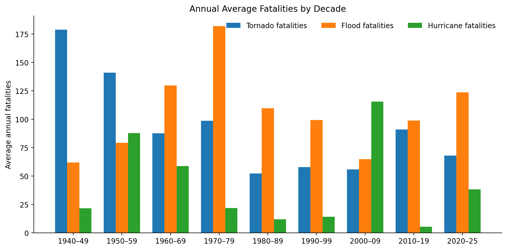
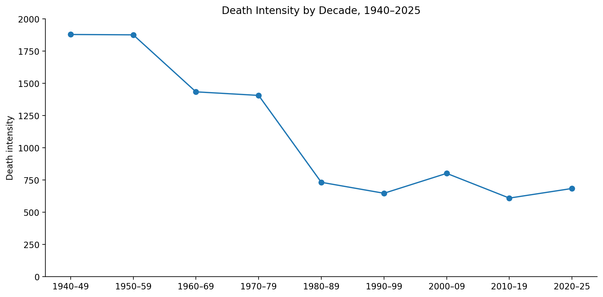
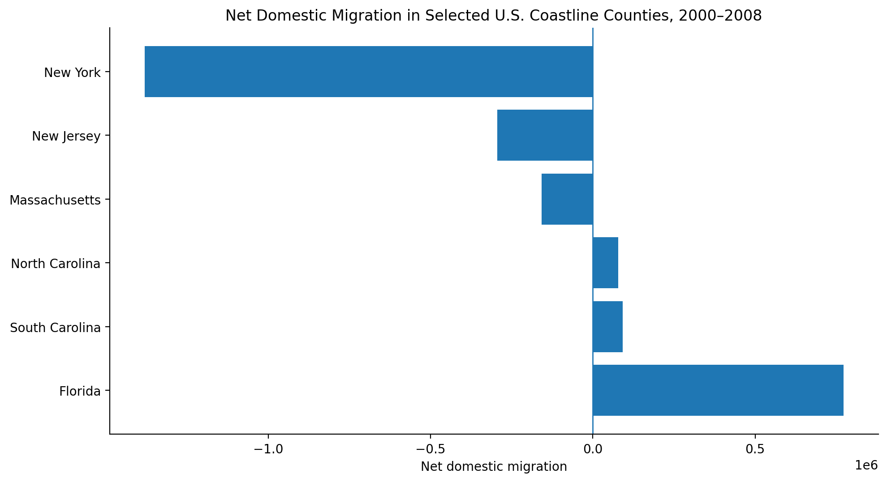
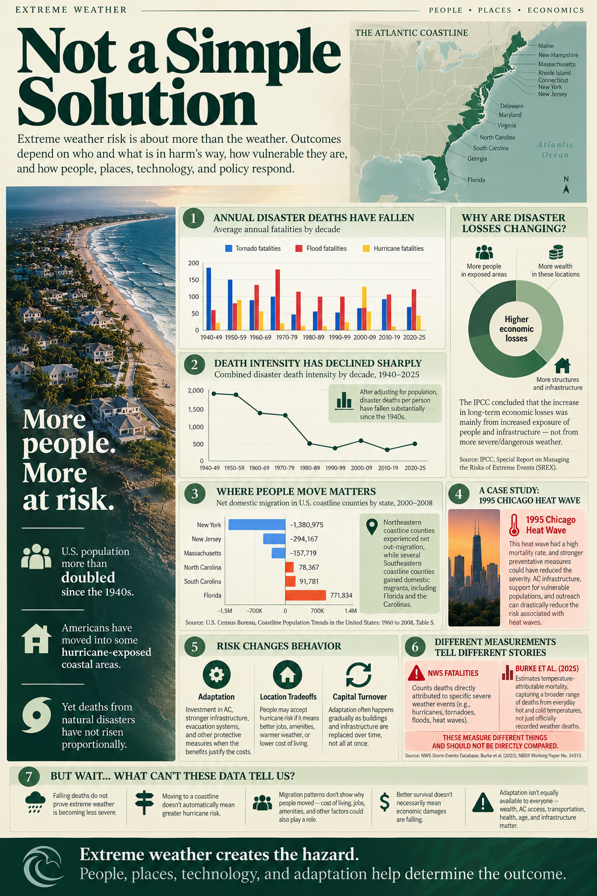

Extreme Weather Creates the Hazard
People, places, technology, and adaptation help determine the outcome.
Not a Simple Solution
Changes in extreme weather can't simply be determined by the number of deaths from these weather disasters. Between a growing population, movement in and out of coastal areas, and more capital investment in these areas, the narrative is not clear on whether severe weather has gotten worse over the years, or if adaptations have just made us better equipped to deal with it.
Severe Weather Fatalities Over Time
Average annual deaths from tornadoes, floods, and hurricanes have generally declined since the 1940s, even as the U.S. population has grown substantially.
Annual Average Fatalities by Decade
Tornadoes · Floods · Hurricanes

The death intensity for severe weather events—tornadoes, hurricanes, and flooding—has sharply decreased since 1940, even with a growing population. This by itself is not an explanation that severe weather isn't getting worse.
Death Intensity by Decade

Better adaptation and technology allow us to not be as affected as we were in the past. Better buildings, air conditioning, evacuation methods and warnings, and other preventative measures can reduce mortality.
More Damage ≠ More Severe Weather
The increase in disaster loss and damages we have seen over the years is also not clear evidence that more severe weather has occurred. More people, infrastructure, and wealth are being invested into these areas. The more capital that is exposed, then the more capital damage occurs.
More people + more infrastructure + more wealth in exposed locations = greater potential losses.
This is shown by the IPCC report, which identifies increased exposure of people and economic assets as an important cause of long-term increases in economic disaster losses.
Where People Live Matters
Domestic migration is also not so clear. From 2000–2008, net domestic migration out of coastline counties was negative overall, with several Northeast states being net negative. But some southern states, such as Florida and the Carolinas, were positive.
Net Domestic Migration in Selected U.S. Coastline Counties
2000–2008

This movement doesn't explain the reasoning behind the move. People may be willing to accept the risk of living in these severe-weather areas in exchange for better jobs, location, weather, or lower living costs.
Case Study: The 1995 Chicago Heat Wave
The 1995 Chicago heat wave had a high mortality rate, but the heat itself was not unprecedented. Vulnerability and public-health preparedness were also important.
Limited air conditioning, outreach programs, and support for elderly and vulnerable populations contributed to the danger. Preventative measures can therefore change the consequences of an extreme weather event even when they cannot eliminate the hazard itself.
Different Measurements Tell Different Stories
NWS Fatalities
The National Weather Service counts deaths directly attributed to specific severe weather events, including hurricanes, tornadoes, floods, and heat waves.
Burke et al. (2025)
Burke et al. estimate temperature-attributable mortality, capturing a broader range of deaths associated with everyday hot and cold temperatures—not only deaths officially recorded as severe-weather fatalities.
Hazard + Exposure + Vulnerability
All of this together shows us that hazard, exposure, and vulnerabilities have to be used together to attempt to explain extreme weather losses. One piece of measurement itself is not enough of an answer.
Sources & Methods
National Weather Service. Weather Related Fatality and Injury Statistics.
U.S. Census Bureau. Coastline Population Trends in the United States: 1960 to 2008. Table 5.
Intergovernmental Panel on Climate Change. Managing the Risks of Extreme Events and Disasters to Advance Climate Change Adaptation (SREX).
Burke, Marshall et al. (2025). “Understanding and Addressing Temperature Impacts on Mortality.” NBER Working Paper No. 34313.
View the Poster
Explore the condensed 18 × 24-inch poster version of this project.
